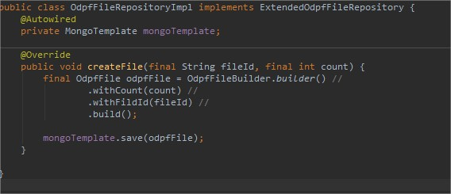
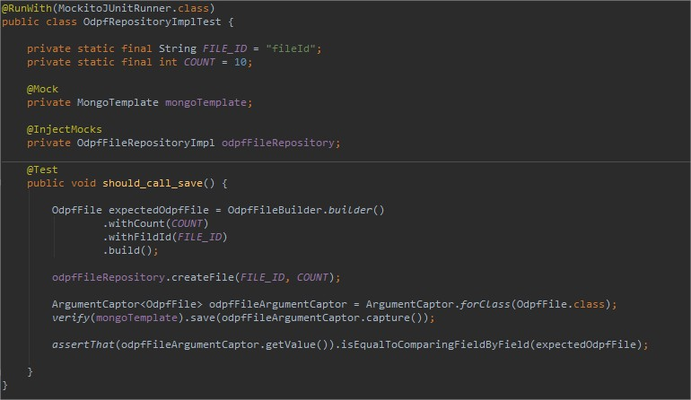

Introduction
Lors de test unitaires, on veut parfois pouvoir vérifier les arguments qui sont passés à un service mais ces arguments sont instanciés dans la méthode que l'on veut tester. Il devient alors difficile de les testers avec un simple test JUnit.
Pour cela on va utiliser le ArgumentCaptor de Mockito. Ceux-ci permettent de capturer les valeurs passées et faire des test dessus.
On illustrera par un exemple très simple.
Considérons la classe à tester suivante :

Dans le cas suivant, on veut pouvoir vérifier que l'objet odpfFile ait bien ses propriétés count et fileId égale au 2 paramètres passés en entrés de la méthode createFile().
Voici un test correspondant à cette classe :

Dans ce test on vérifie que les champs de l'object odpfFile passés au mongoTemplate sont les même que l'odpfFile que l'on est sensé envoyer.